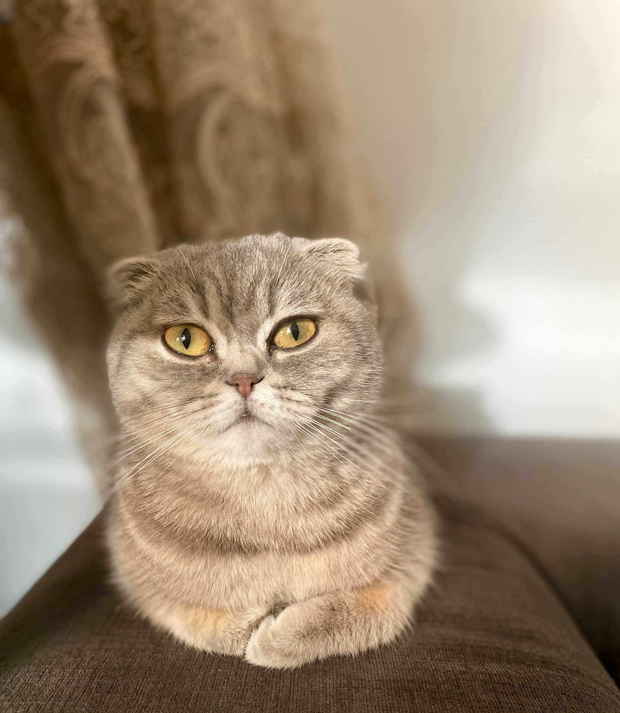
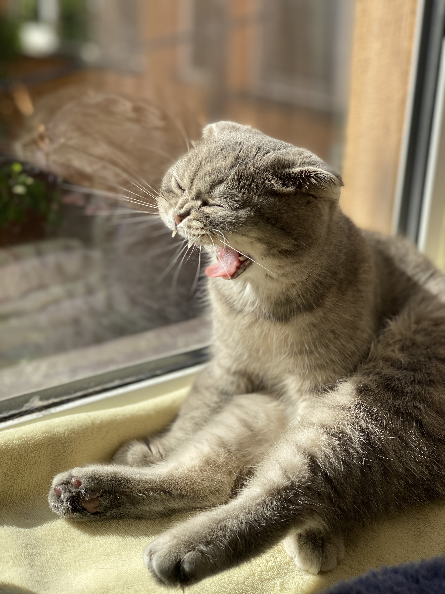
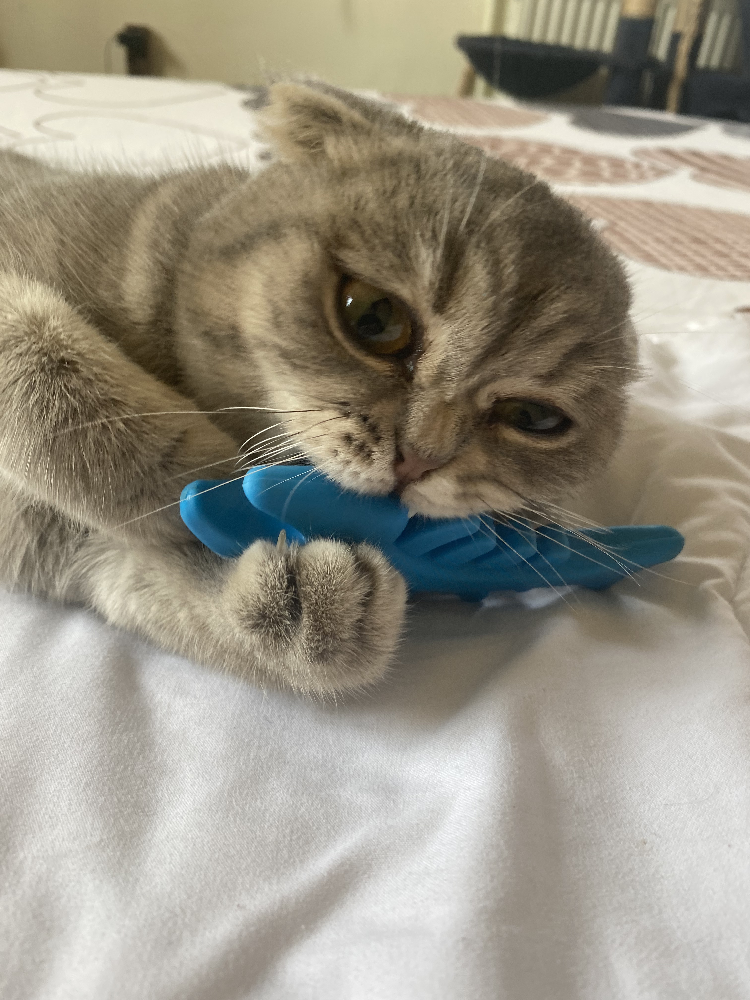
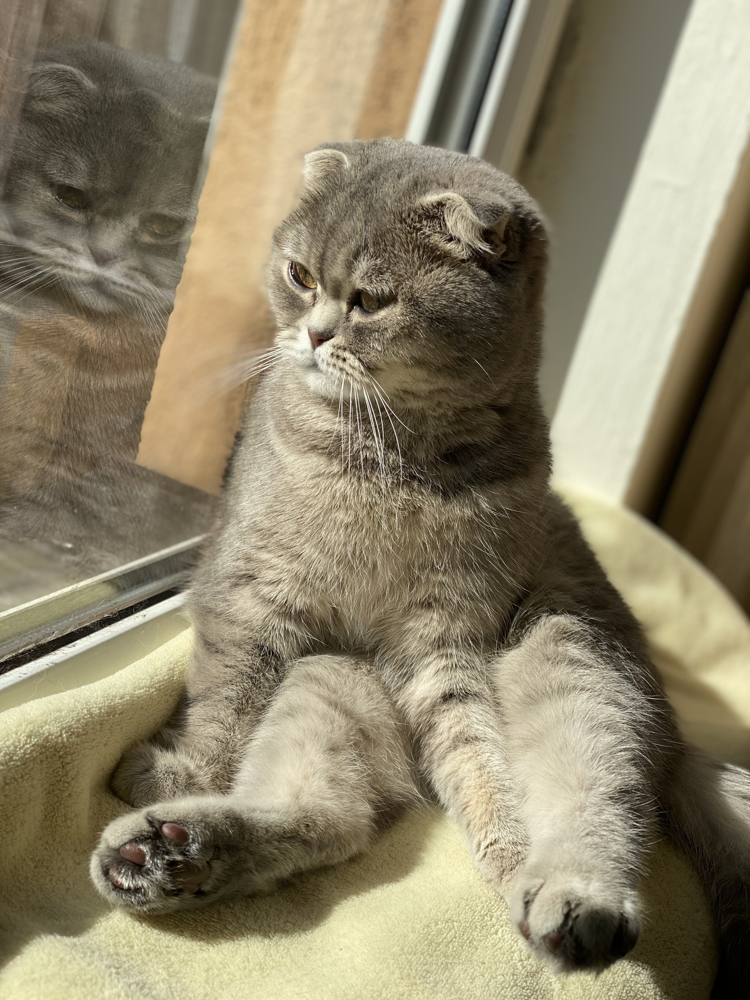

Povestea Lunei

Steaua Casei 🌟
Luna este, fără îndoială, steaua casei. O pisicuță Scottish Fold gri, a cucerit inimile tuturor de la prima clipă. Cu urechile ei drăgălașe, pliate, și ochii mari și curioși, este imposibil să nu o iubești.
Personalitate
Este plină de personalitate! Așa cum am menționat pe prima pagină, Luna adoră să fie în centrul atenției. Când vrea să se joace, îți va aduce jucăria ei preferată (de obicei un șoricel de pluș) și nu te va lăsa în pace până nu i-o arunci.
De asemenea, este foarte vocală. Ne "povestește" despre ziua ei cu tot felul de miorlăituri și sunete amuzante. Seara, locul ei preferat este pe canapea, lângă noi, torcând zgomotos.
Obiceiuri Amuzante
- Doarme în cele mai ciudate poziții, de multe ori pe spate, cu lăbuțele în sus.
- "Vânează" umbrele de pe pereți sau reflexiile luminii.
- Este extrem de curioasă și trebuie să inspecteze orice geantă sau cutie nouă care intră în casă.
Mai multe poze cu Luna



